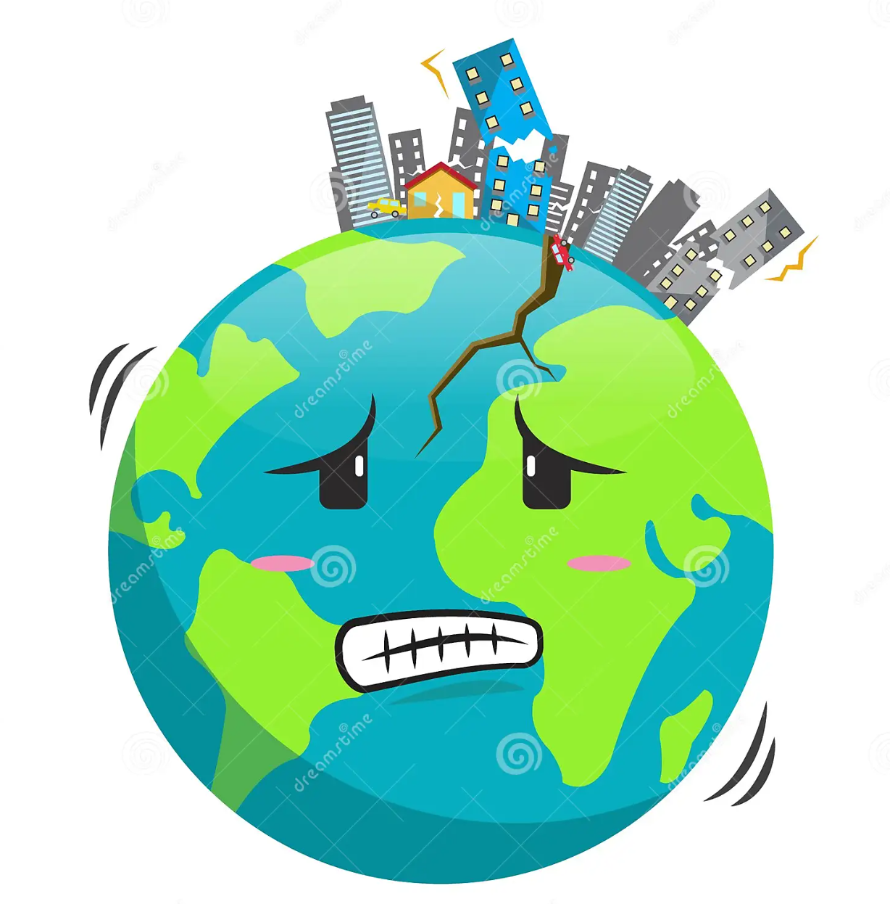

Welcome to our engaging website designed for K-12 students, teachers, and parents, offering a delightful and educational exploration of earthquakes!
What is an Earthquake?
Imagine the Earth is like a giant puzzle made of big pieces called tectonic plates. These plates are always moving, like toys on the floor.
Sometimes, these plates bump into each other, pull apart, or slide past one another. When this happens, it's like the Earth saying, "Oops, I need to adjust!" This adjustment makes the ground shake, and that's an earthquake!

How Do Earthquakes Occur?
Earthquakes happen because the Earth is always moving and adjusting itself. It's like a big, friendly reminder that our Earth is a lively and active place!
Stay Safe During an Earthquake
When we hear about earthquakes, it's a reminder that our Earth is always moving. We need to be ready, just like we're ready for different weather. Some buildings are designed a certain way to stay safe during an earthquake.
Let's learn more about earthquakes. Select one of the next options: